Changes in PRIMAP-hist v2.6_final compared to v2.5.1_final for Yemen
2024-09-24
Johannes Gütschow
Change analysis for Yemen for PRIMAP-hist v2.6_final compared to v2.5.1_final
Overview over emissions by sector and gas
The following figures show the aggregate national total emissions excluding LULUCF AR6GWP100 for the country reported priority scenario. The dotted linesshow the v2.5.1_final data.
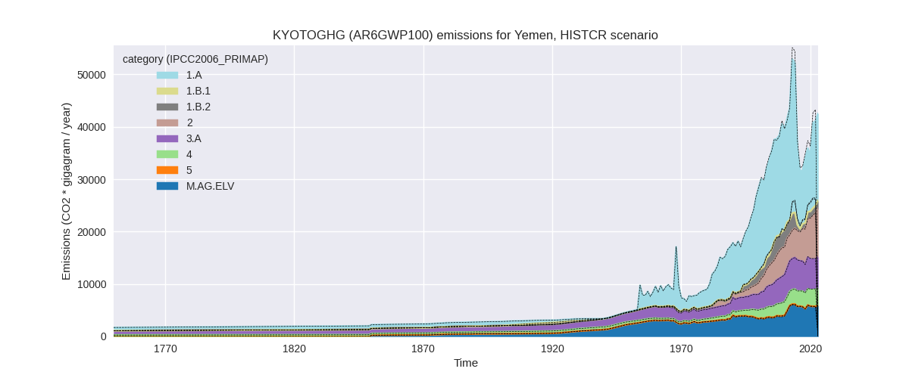
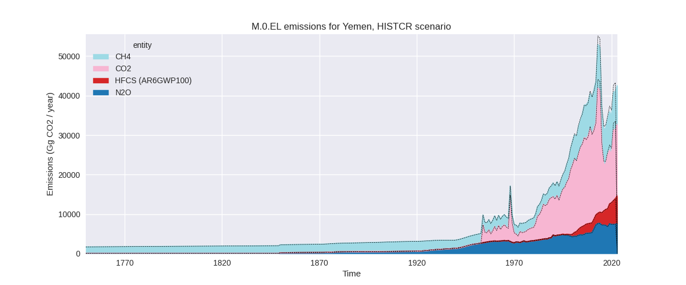
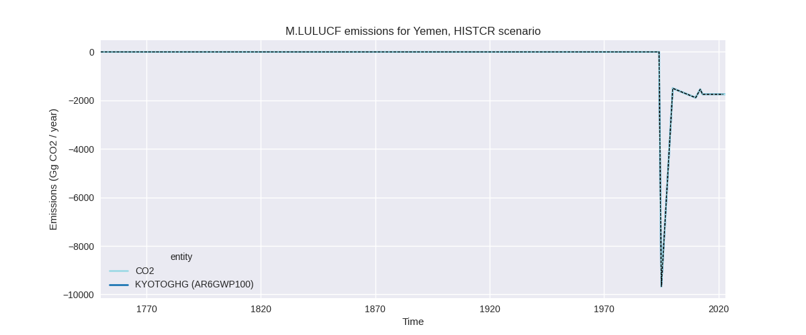
The following figures show the aggregate national total emissions excluding LULUCF AR6GWP100 for the third party priority scenario. The dotted linesshow the v2.5.1_final data.
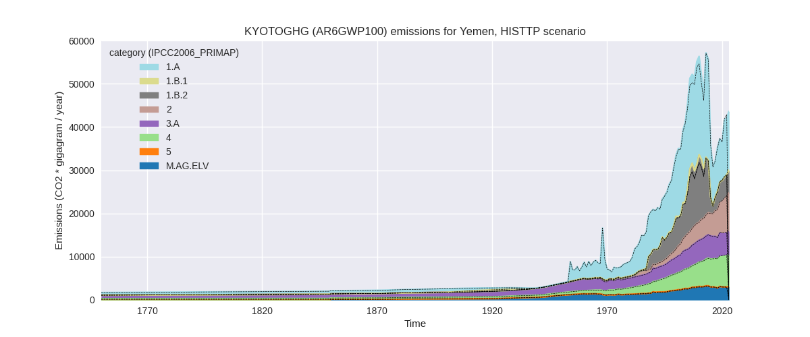
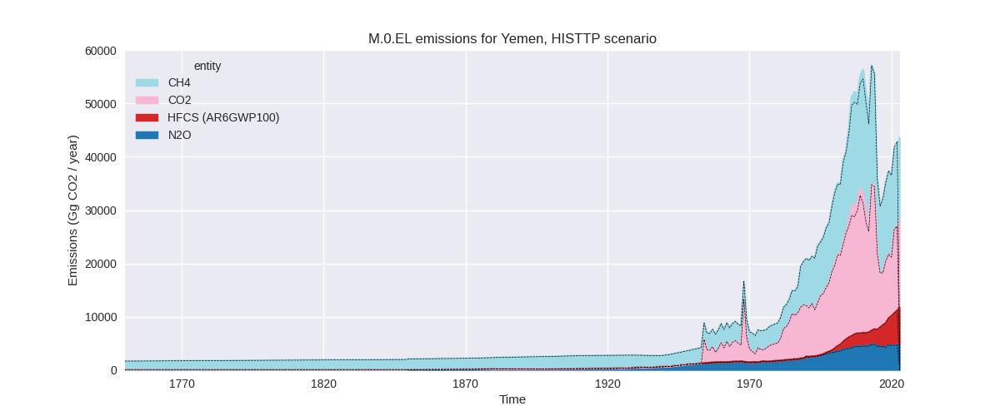
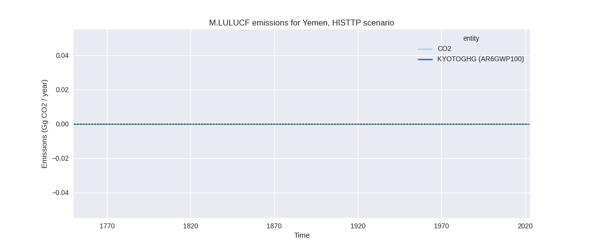
Overview over changes
In the country reported priority scenario we have the following changes for aggregate Kyoto GHG and national total emissions excluding LULUCF (M.0.EL):
- Emissions in 2022 have changed by -5.1%% (-2187.75 Gg CO2 / year)
- Emissions in 1990-2022 have changed by -1.7%% (-556.69 Gg CO2 / year)
In the third party priority scenario we have the following changes for aggregate Kyoto GHG and national total emissions excluding LULUCF (M.0.EL):
- Emissions in 2022 have changed by -1.7%% (-734.57 Gg CO2 / year)
- Emissions in 1990-2022 have changed by 1.2%% (432.59 Gg CO2 / year)
Most important changes per scenario and time frame
In the country reported priority scenario the following sector-gas combinations have the highest absolute impact on national total KyotoGHG (AR6GWP100) emissions in 2022 (top 5):
- 1: 1.B.2, CO2 with -1345.13 Gg CO2 / year (-72.0%)
- 2: 1.A, CO2 with -801.68 Gg CO2 / year (-4.8%)
- 3: 4, CH4 with -110.11 Gg CO2 / year (-3.6%)
- 4: 2, HFCS (AR6GWP100) with 94.35 Gg CO2 / year (1.5%)
- 5: 4, N2O with -22.39 Gg CO2 / year (-6.8%)
In the country reported priority scenario the following sector-gas combinations have the highest absolute impact on national total KyotoGHG (AR6GWP100) emissions in 1990-2022 (top 5):
- 1: 1.B.2, CO2 with -525.76 Gg CO2 / year (-39.0%)
- 2: 1.A, CO2 with -21.42 Gg CO2 / year (-0.1%)
- 3: 4, CH4 with -10.54 Gg CO2 / year (-0.6%)
- 4: 4, N2O with -7.53 Gg CO2 / year (-3.7%)
- 5: 5, N2O with 5.71 Gg CO2 / year (5.2%)
In the third party priority scenario the following sector-gas combinations have the highest absolute impact on national total KyotoGHG (AR6GWP100) emissions in 2022 (top 5):
- 1: 1.A, CO2 with -657.57 Gg CO2 / year (-4.8%)
- 2: 4, CH4 with -260.26 Gg CO2 / year (-3.6%)
- 3: 1.B.2, CO2 with 102.28 Gg CO2 / year (7.3%)
- 4: 2, HFCS (AR6GWP100) with 94.35 Gg CO2 / year (1.5%)
- 5: 4, N2O with -10.58 Gg CO2 / year (-3.5%)
In the third party priority scenario the following sector-gas combinations have the highest absolute impact on national total KyotoGHG (AR6GWP100) emissions in 1990-2022 (top 5):
- 1: 1.B.2, CO2 with 472.21 Gg CO2 / year (46.3%)
- 2: 4, CH4 with -27.94 Gg CO2 / year (-0.6%)
- 3: 1.A, CO2 with -17.57 Gg CO2 / year (-0.1%)
- 4: 5, N2O with 5.71 Gg CO2 / year (5.2%)
- 5: 2, HFCS (AR6GWP100) with 2.86 Gg CO2 / year (0.1%)
Notes on data changes
Here we list notes explaining important emissions changes for the country. ’' means that the following text only applies to the TP time series, while means that it only applies to the CR scenario. Otherwise the note applies to both scenarios.
- CO2 from oil and gas (flaring) has been removed from the EI dataset for Yemen in the 2024 release. As country reported data has only a few data points this affects both the TP and CR time-series.
- 2022 changes for energy CO2 due to updated EI data.
- Changes in sectors 4 and 5 are due to the removal of FAOSTAT data.
Changes by sector and gas
For each scenario and time frame the changes are displayed for all individual sectors and all individual gases. In the sector plot we use aggregate Kyoto GHGs in AR6GWP100. In the gas plot we usenational total emissions without LULUCF. ## country reported scenario
2022
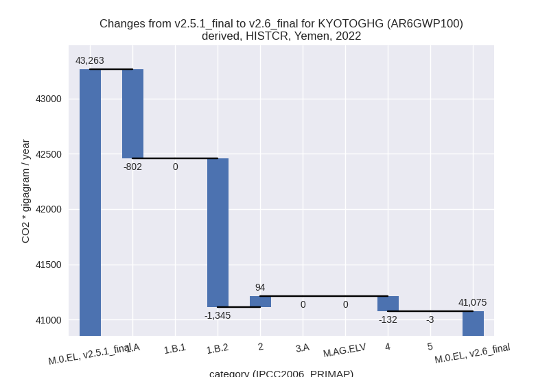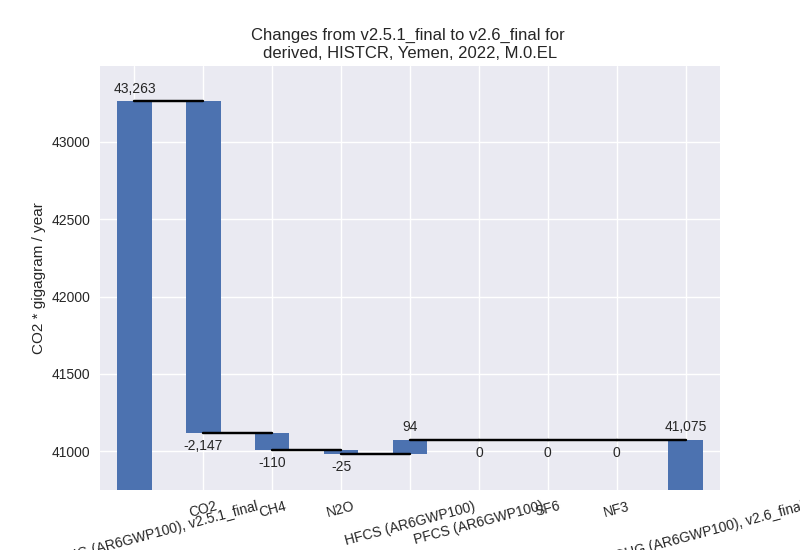
1990-2022
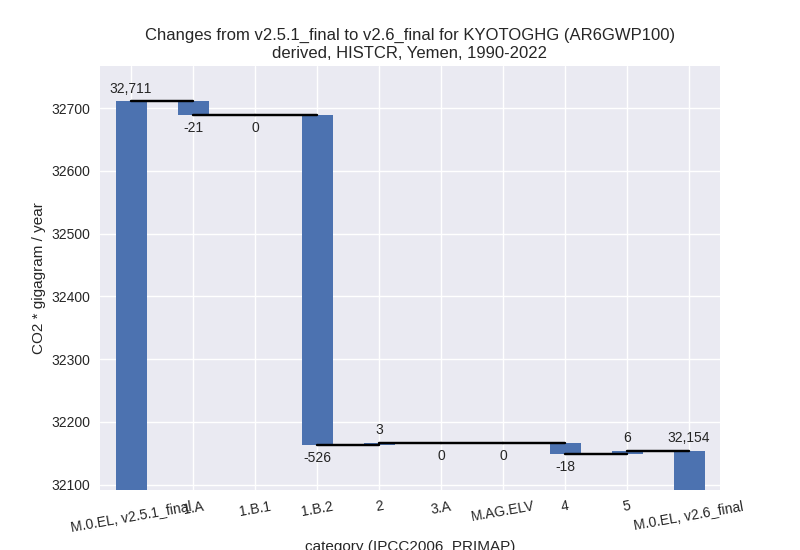
third party scenario
2022
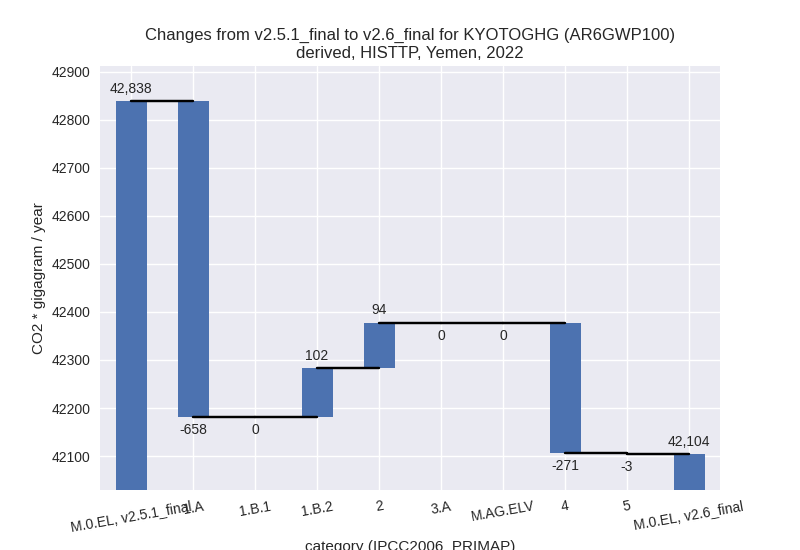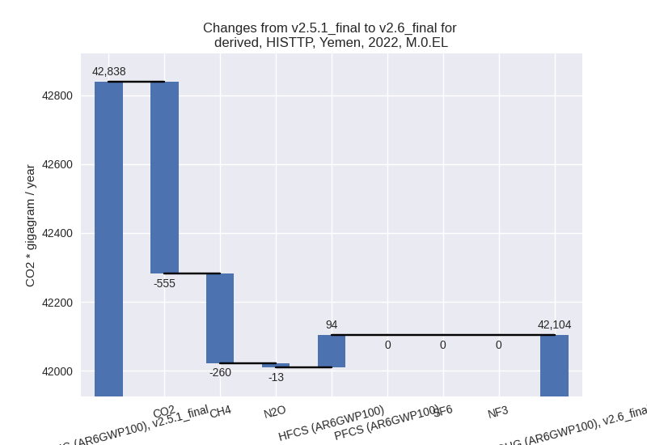
1990-2022
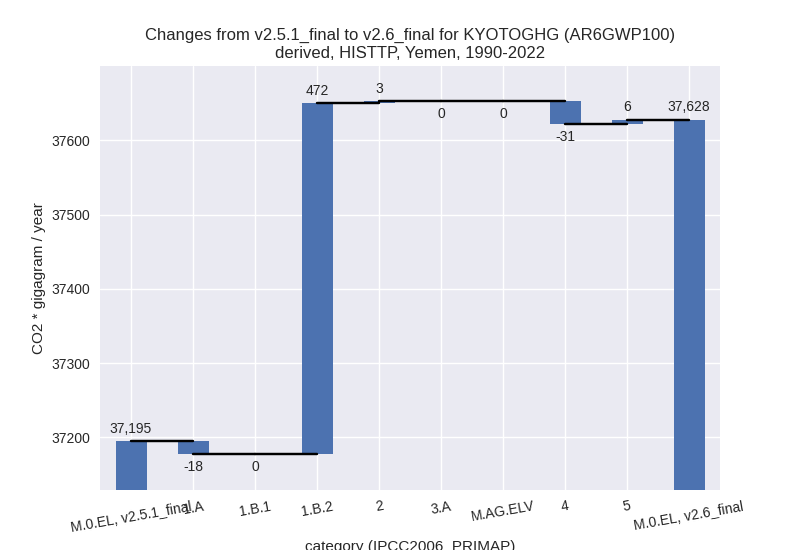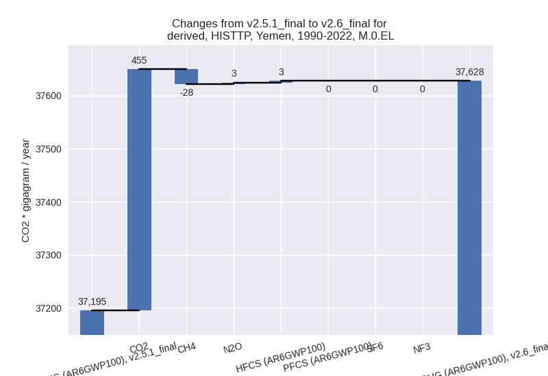
Detailed changes for the scenarios:
country reported scenario (HISTCR):
Most important changes per time frame
For 2022 the following sector-gas combinations have the highest absolute impact on national total KyotoGHG (AR6GWP100) emissions in 2022 (top 5):
- 1: 1.B.2, CO2 with -1345.13 Gg CO2 / year (-72.0%)
- 2: 1.A, CO2 with -801.68 Gg CO2 / year (-4.8%)
- 3: 4, CH4 with -110.11 Gg CO2 / year (-3.6%)
- 4: 2, HFCS (AR6GWP100) with 94.35 Gg CO2 / year (1.5%)
- 5: 4, N2O with -22.39 Gg CO2 / year (-6.8%)
For 1990-2022 the following sector-gas combinations have the highest absolute impact on national total KyotoGHG (AR6GWP100) emissions in 1990-2022 (top 5):
- 1: 1.B.2, CO2 with -525.76 Gg CO2 / year (-39.0%)
- 2: 1.A, CO2 with -21.42 Gg CO2 / year (-0.1%)
- 3: 4, CH4 with -10.54 Gg CO2 / year (-0.6%)
- 4: 4, N2O with -7.53 Gg CO2 / year (-3.7%)
- 5: 5, N2O with 5.71 Gg CO2 / year (5.2%)
Changes in the main sectors for aggregate KyotoGHG (AR6GWP100) are
- 1: Total sectoral emissions in 2022 are 17511.22 Gg
CO2 / year which is 42.6% of M.0.EL emissions. 2022 Emissions have
changed by -10.9% (-2146.81 Gg CO2 /
year). 1990-2022 Emissions have changed by -3.1% (-547.18 Gg CO2 / year). For 2022
the changes per gas
are:
For 1990-2022 the changes per gas are:
The changes come from the following subsectors:- 1.A: Total sectoral emissions in 2022 are 16099.37
Gg CO2 / year which is 91.9% of category 1 emissions. 2022 Emissions
have changed by -4.7% (-801.68 Gg
CO2 / year). 1990-2022 Emissions have changed by -0.1% (-21.42 Gg CO2 / year). For 2022 the
changes per gas
are:
There is no subsector information available in PRIMAP-hist. - 1.B.1: Total sectoral emissions in 2022 are 194.65 Gg CO2 / year which is 1.1% of category 1 emissions. 2022 Emissions have changed by 0.0% (0.00 Gg CO2 / year). 1990-2022 Emissions have changed by 0.0% (0.00 Gg CO2 / year).
- 1.B.2: Total sectoral emissions in 2022 are 1217.20
Gg CO2 / year which is 7.0% of category 1 emissions. 2022 Emissions have
changed by -52.5% (-1345.13 Gg CO2 /
year). 1990-2022 Emissions have changed by -23.8% (-525.76 Gg CO2 / year). For 2022
the changes per gas
are:
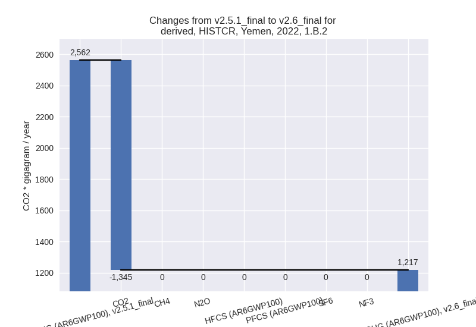
For 1990-2022 the changes per gas are:
There is no subsector information available in PRIMAP-hist.
- 1.A: Total sectoral emissions in 2022 are 16099.37
Gg CO2 / year which is 91.9% of category 1 emissions. 2022 Emissions
have changed by -4.7% (-801.68 Gg
CO2 / year). 1990-2022 Emissions have changed by -0.1% (-21.42 Gg CO2 / year). For 2022 the
changes per gas
are:
- 2: Total sectoral emissions in 2022 are 8811.85 Gg CO2 / year which is 21.5% of M.0.EL emissions. 2022 Emissions have changed by 1.1% (94.35 Gg CO2 / year). 1990-2022 Emissions have changed by 0.1% (2.86 Gg CO2 / year).
- M.AG: Total sectoral emissions in 2022 are 11468.66 Gg CO2 / year which is 27.9% of M.0.EL emissions. 2022 Emissions have changed by 0.0% (0.00 Gg CO2 / year). 1990-2022 Emissions have changed by 0.0% (0.00 Gg CO2 / year).
- 4: Total sectoral emissions in 2022 are 3212.61 Gg
CO2 / year which is 7.8% of M.0.EL emissions. 2022 Emissions have
changed by -4.0% (-132.50 Gg CO2 /
year). 1990-2022 Emissions have changed by -0.9% (-18.07 Gg CO2 / year). For 2022 the
changes per gas
are:
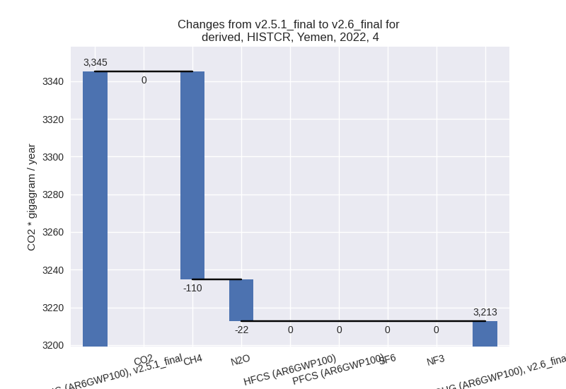 - 5: Total sectoral emissions in 2022 are 70.58 Gg
CO2 / year which is 0.2% of M.0.EL emissions. 2022 Emissions have
changed by -3.8% (-2.79 Gg CO2 /
year). 1990-2022 Emissions have changed by 5.2% (5.71 Gg CO2 / year). For 2022 the
changes per gas
are:
For 1990-2022 the changes per gas are:
third party scenario (HISTTP):
Most important changes per time frame
For 2022 the following sector-gas combinations have the highest absolute impact on national total KyotoGHG (AR6GWP100) emissions in 2022 (top 5):
- 1: 1.A, CO2 with -657.57 Gg CO2 / year (-4.8%)
- 2: 4, CH4 with -260.26 Gg CO2 / year (-3.6%)
- 3: 1.B.2, CO2 with 102.28 Gg CO2 / year (7.3%)
- 4: 2, HFCS (AR6GWP100) with 94.35 Gg CO2 / year (1.5%)
- 5: 4, N2O with -10.58 Gg CO2 / year (-3.5%)
For 1990-2022 the following sector-gas combinations have the highest absolute impact on national total KyotoGHG (AR6GWP100) emissions in 1990-2022 (top 5):
- 1: 1.B.2, CO2 with 472.21 Gg CO2 / year (46.3%)
- 2: 4, CH4 with -27.94 Gg CO2 / year (-0.6%)
- 3: 1.A, CO2 with -17.57 Gg CO2 / year (-0.1%)
- 4: 5, N2O with 5.71 Gg CO2 / year (5.2%)
- 5: 2, HFCS (AR6GWP100) with 2.86 Gg CO2 / year (0.1%)
Changes in the main sectors for aggregate KyotoGHG (AR6GWP100) are
- 1: Total sectoral emissions in 2022 are 18164.66 Gg
CO2 / year which is 43.1% of M.0.EL emissions. 2022 Emissions have
changed by -3.0% (-555.30 Gg CO2 /
year). 1990-2022 Emissions have changed by 2.1% (454.64 Gg CO2 / year). For 2022 the
changes per gas
are:
For 1990-2022 the changes per gas are:
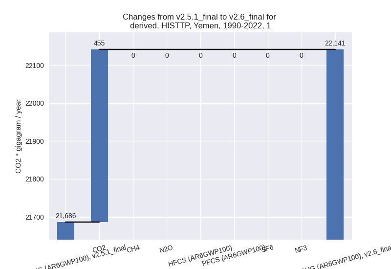
The changes come from the following subsectors:- 1.A: Total sectoral emissions in 2022 are 13183.19
Gg CO2 / year which is 72.6% of category 1 emissions. 2022 Emissions
have changed by -4.8% (-657.57 Gg
CO2 / year). 1990-2022 Emissions have changed by -0.1% (-17.57 Gg CO2 / year). For 2022 the
changes per gas
are:
There is no subsector information available in PRIMAP-hist. - 1.B.1: Total sectoral emissions in 2022 are 194.65 Gg CO2 / year which is 1.1% of category 1 emissions. 2022 Emissions have changed by 0.0% (0.00 Gg CO2 / year). 1990-2022 Emissions have changed by 0.0% (0.00 Gg CO2 / year).
- 1.B.2: Total sectoral emissions in 2022 are 4786.82
Gg CO2 / year which is 26.4% of category 1 emissions. 2022 Emissions
have changed by 2.2% (102.28 Gg CO2
/ year). 1990-2022 Emissions have changed by 6.8% (472.21 Gg CO2 / year). For 2022 the
changes per gas
are:
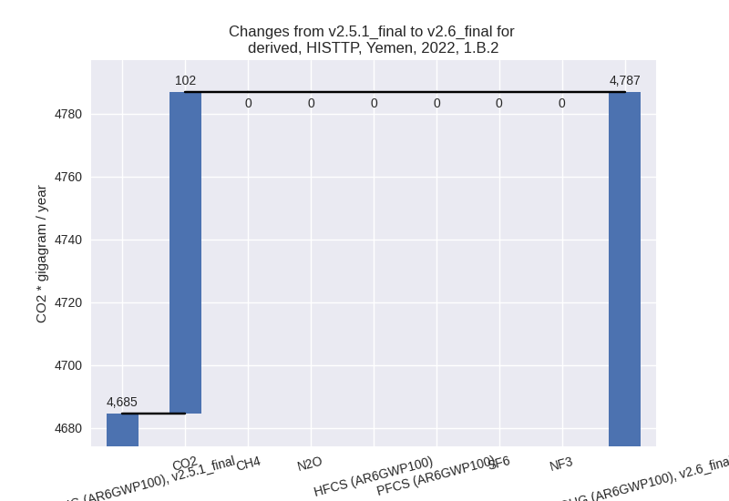
For 1990-2022 the changes per gas are:
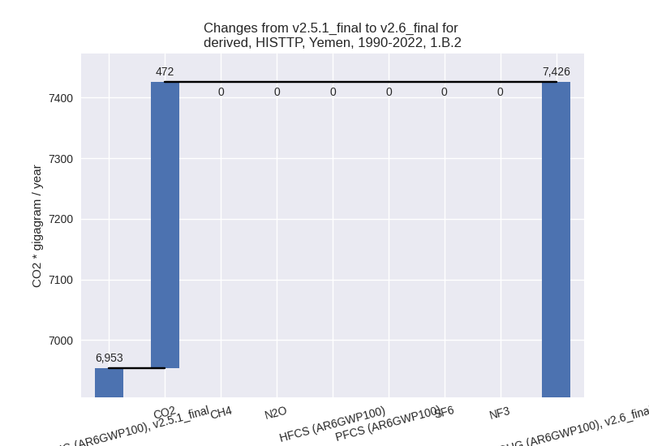
There is no subsector information available in PRIMAP-hist.
- 1.A: Total sectoral emissions in 2022 are 13183.19
Gg CO2 / year which is 72.6% of category 1 emissions. 2022 Emissions
have changed by -4.8% (-657.57 Gg
CO2 / year). 1990-2022 Emissions have changed by -0.1% (-17.57 Gg CO2 / year). For 2022 the
changes per gas
are:
- 2: Total sectoral emissions in 2022 are 8524.81 Gg CO2 / year which is 20.2% of M.0.EL emissions. 2022 Emissions have changed by 1.1% (94.35 Gg CO2 / year). 1990-2022 Emissions have changed by 0.1% (2.86 Gg CO2 / year).
- M.AG: Total sectoral emissions in 2022 are 8156.30 Gg CO2 / year which is 19.4% of M.0.EL emissions. 2022 Emissions have changed by 0.0% (0.00 Gg CO2 / year). 1990-2022 Emissions have changed by 0.0% (0.00 Gg CO2 / year).
- 4: Total sectoral emissions in 2022 are 7187.54 Gg
CO2 / year which is 17.1% of M.0.EL emissions. 2022 Emissions have
changed by -3.6% (-270.83 Gg CO2 /
year). 1990-2022 Emissions have changed by -0.6% (-30.62 Gg CO2 / year). For 2022 the
changes per gas
are:

- 5: Total sectoral emissions in 2022 are 70.58 Gg
CO2 / year which is 0.2% of M.0.EL emissions. 2022 Emissions have
changed by -3.8% (-2.79 Gg CO2 /
year). 1990-2022 Emissions have changed by 5.2% (5.71 Gg CO2 / year). For 2022 the
changes per gas
are:
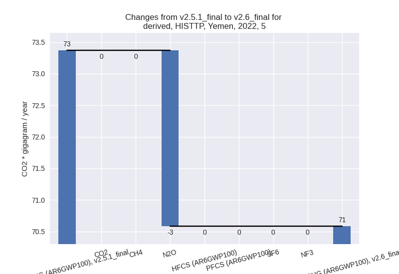
For 1990-2022 the changes per gas are:
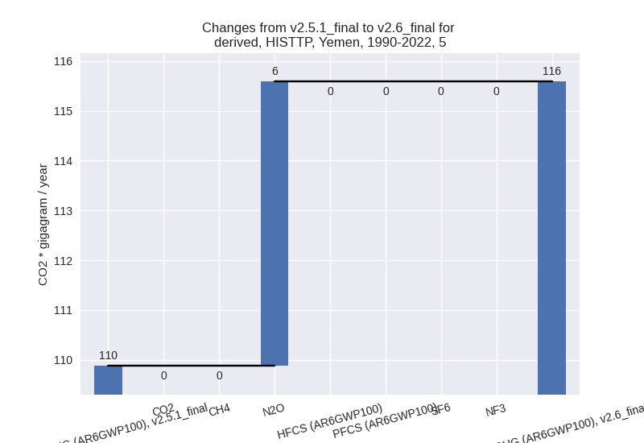